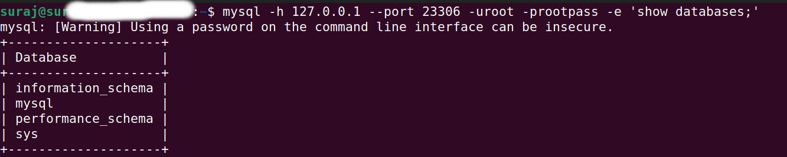
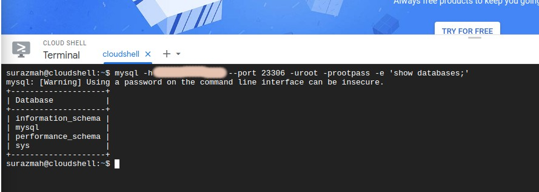

Ubuntu 22.04 LTS. I am using this operating system. The concept below should be applicable to any other Linux system.
Caution: This article is just for learning purposes. Do close the port once you are done experimenting.
Use docker run command to spin up a Docker database. The -p option will bind the MySQL container's default port, 3306, to the port 23306 on your Docker host machine.
docker run --name mysqltest -p 23306:3306 -e MYSQL_ROOT_PASSWORD=rootpass -d mysql:8
+
During port forwarding, you will use this port, 23306, as an internal port.
Use the code below to connect the database locally.
mysql -h 127.0.0.1 --port 23306 -uroot -prootpass -e 'show databases;'
Example:
+
You will need to wait till the database is ready.
Find your IP address. You can use whatismyipaddress.com, but my favorite is curl ifconfig.me in a command terminal.
+
Learn to install ifconfig on Ubuntu/Debian from linuxize.com
Open a port (i.e., external port) in your router and map it to your internal port (your host machine, for us it's 23306). The external port is of your choice. You can keep both internal and external ports as 23306 to keep things easy for now.
+
If you are using a spectrum wifi, use this article from spectrum to follow spectrum guidelines on how to do a port forwarding.
Well I hope this is why you are here. Now you want to access this database from outside your network. Two approaches are listed below:
Connect database from the internet
mysql -h youripaddress --port exposed-port-from-router -uroot -prootpass -e 'show databases;'
Example:
+
Learn to launch Google Cloud Shell.
If you try to locally connect to the docker database over the internet (using your ip address), and the connection fails, you might need to do hole punching.